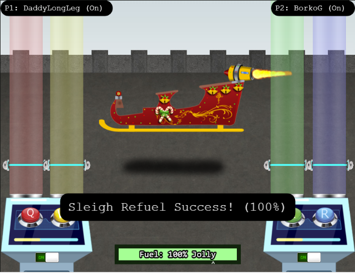
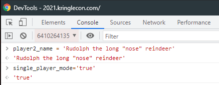
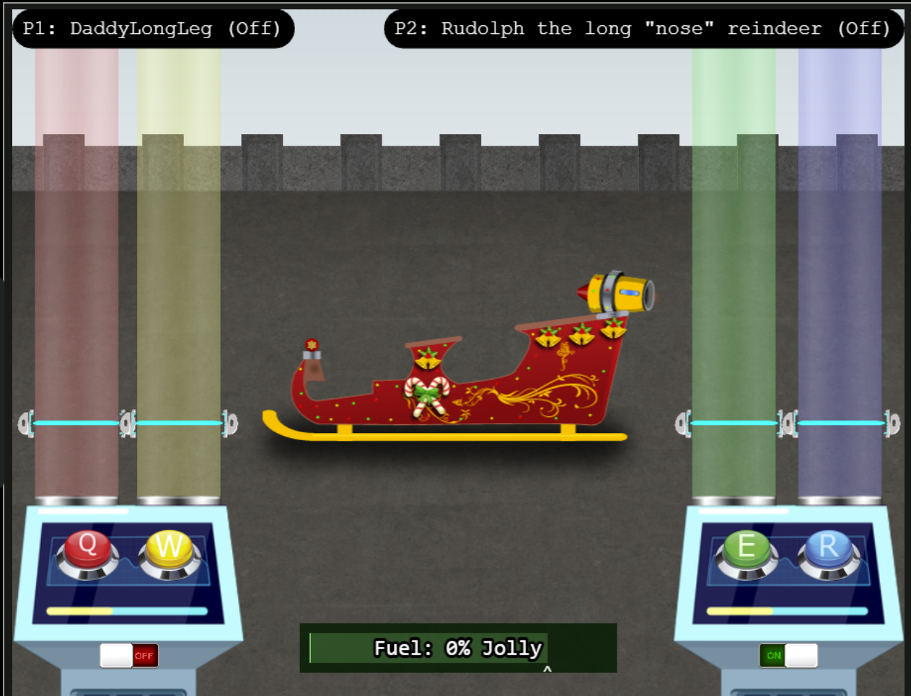

This challenge is a GuitarHero-like game where you use your reflexes to hit musical notes to put fuel into Santa's sleigh. The first time I solved it, I simply jumped into a game with some random person and completed it. After that, I figured out that there's a way to complete it by using single player mode, but first you need to edit some cookie data to enable single player and do some console commands to spawn a computer player for player 2.
Playing with another random player. Shout out to BorkoG, whoever you are...
Here are the console commands to spawn another player and activate the computer. You don't need to name him, but I thought Rudolph was appropriate for a Christmas-themed challenge.

Here I am spawned with Rudolph. His console is activated as you can tell by the little green "on" button. Just turn your console on, hit all the notes, and refill Santa's sleigh! I asked Rudolph to tell Santa I was a good boy this year...
